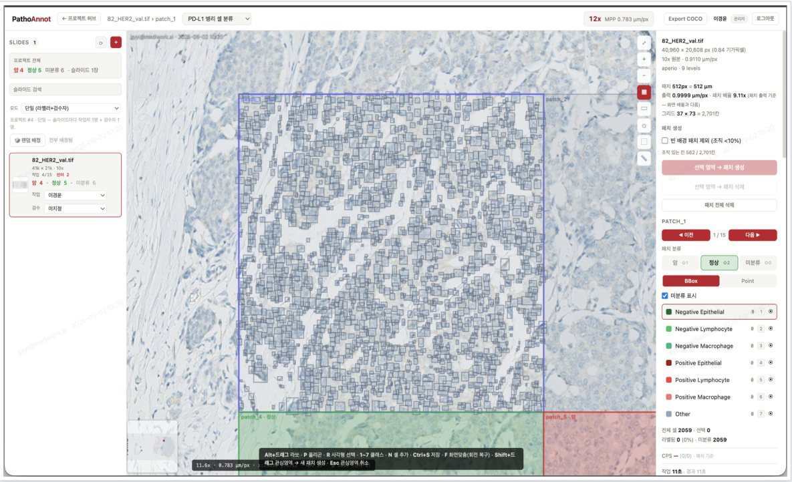

의료 AI 데이터 라벨링·QA 플랫폼
4개 라벨링 툴 → 공통 허브 API → 단일 QA 원장. 설계·개발·배포·운영 총괄.
- 3D/X-ray DICOM, 수술영상, 병리 WSI, LLM 답변 평가까지 4종 툴을 FastAPI 허브(SSO JWT 인증, 계정·역할, 판독자 자격 원장, 프로젝트 레지스트리)로 묶음
- QA 엔진: Dice·IoU(세그), Cohen κ·Fleiss κ(분류) 자동 계산, append-only 원장과 manifest hash 봉인으로 FDA 510(k)·식약처 증빙 리포트까지 한 흐름
- MySQL → PostgreSQL 전환, 허브 API 4단계 무중단 분리, docker secrets 시크릿화, nginx 업스트림 고정으로 생긴 404 장애의 근본 원인 수정
- 5개 저장소 Bitbucket 편입, PR 머지 → Jira 티켓 자동 완료, HANDOFF 문서와 22쪽 사용 가이드 유지
Vue3 · Vuetify · vtk.js · TypeScript · FastAPI · onnxruntime-web · PostgreSQL · Docker · nginx · Electron
